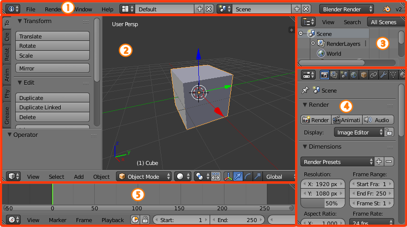

介绍¶
打开Blender并关闭了 启动画面 之后，你会看到与下图相似的Blender窗口。Blender的用户界面在所有平台上都是一致的。
默认的Blender启动界面。
界面元素¶
Window ‣ Screen ‣ Areas ‣ Editors ‣ Regions ‣ (Tabs) ‣ Panels ‣ Controls
用户可以通过使用 屏幕布局 来定制界面，以适应特定的任务，然后将布局命名并保存供将来使用。接下来介绍默认的界面。
屏幕由一个或多个 区域 组成，每个区域都包含一个 编辑器 。
默认界面¶
默认情况下启动Blender会出现默认界面，被分为五个区域，包含如下列出的编辑器：
- 顶部的信息编辑器。
- 大块的3D视图视窗。
- 底部的时间轴。
- 右上角的大纲视图。
- 右下角的属性编辑器。

由五个编辑器组成的Blender默认屏幕布局
信息 (1)，3D视图 (2), 大纲 (3), 属性 (4) 和 时间轴 (5)。
编辑器的组成部分¶
通常，一个编辑器能让用户通过Blender的某个特殊的方式来查看和修改作品。编辑器由 区块 组成。而区块则有更小的构成元素，比如包含按钮，控制条和窗口小部件的 选项卡和面板 。

3D视图编辑器。
黄色：主区块，绿色：标题栏，蓝色：工具栏，紫色：操作面板，红色：属性区块。
用户界面原则¶
- 没有重叠
- UI的设计是为了让你能一目了然所有相关的选项和工具，而无需到处拖拽编辑器。
- 没有阻碍
- 工具和界面选项不会在用户使用任何Blender的其他功能时造成阻碍。Blender的特点是没有弹出式对话框（要求用户在进行操作之前输入数据）。
- 非模态工具
- 用户可以高效地访问工具而不需要花时间在不同工具之间选择。很多工具使用了一致的且可预知的鼠标和键盘操作来进行互动。